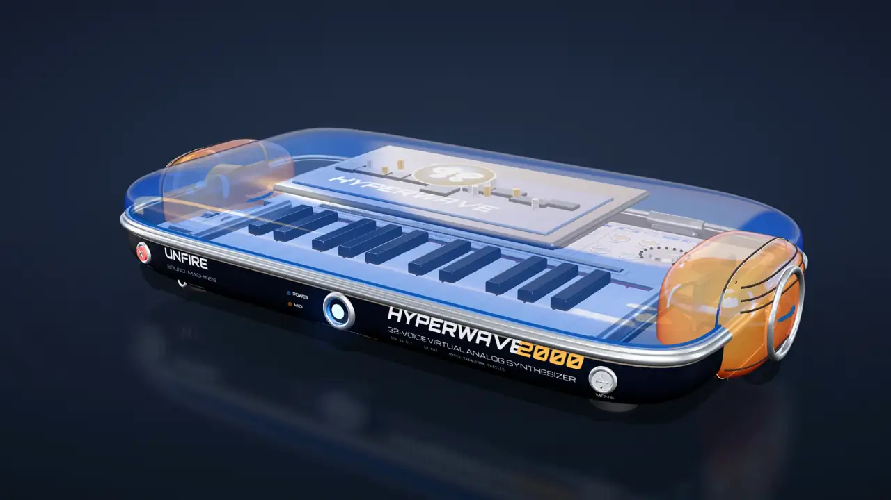
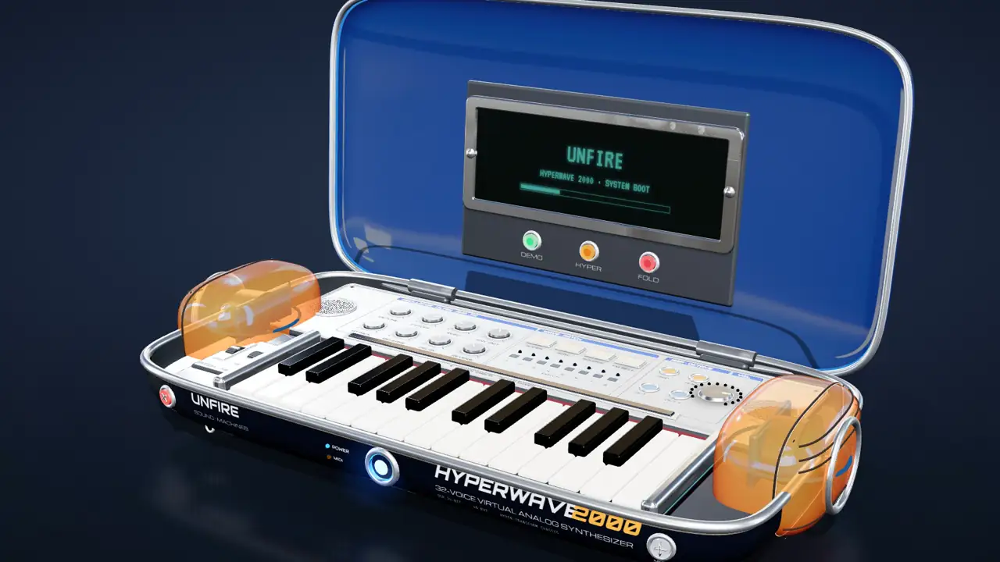
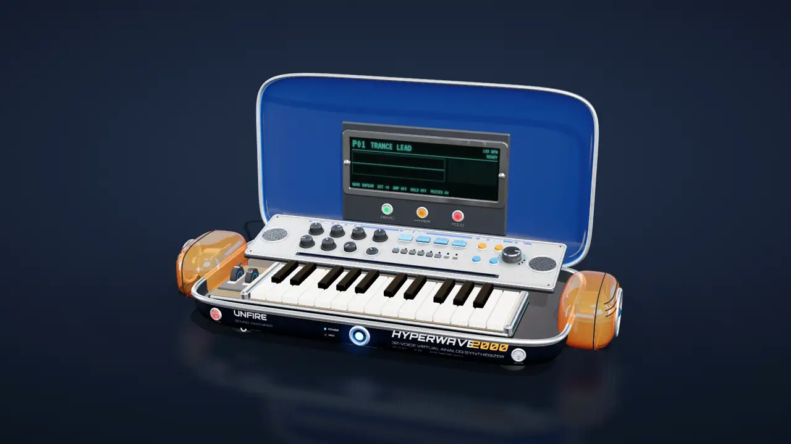
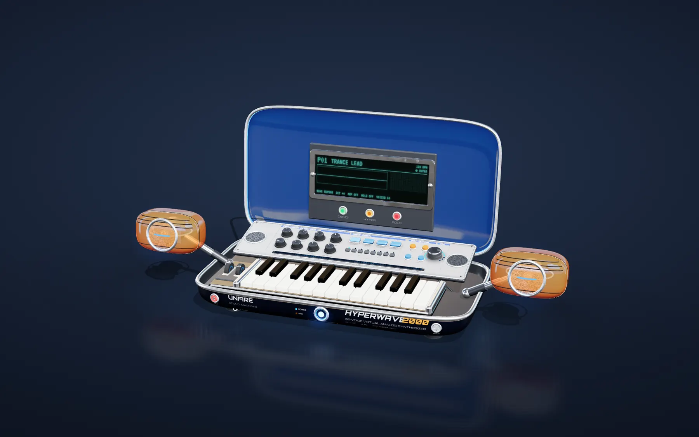
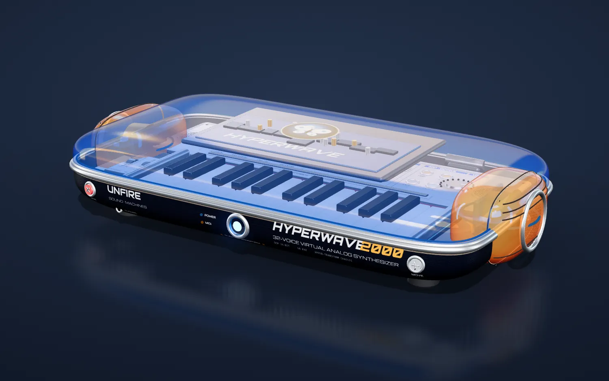
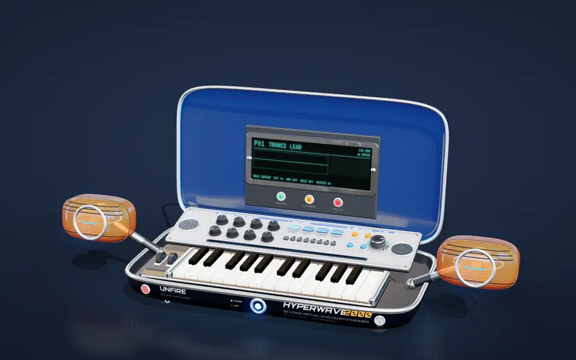
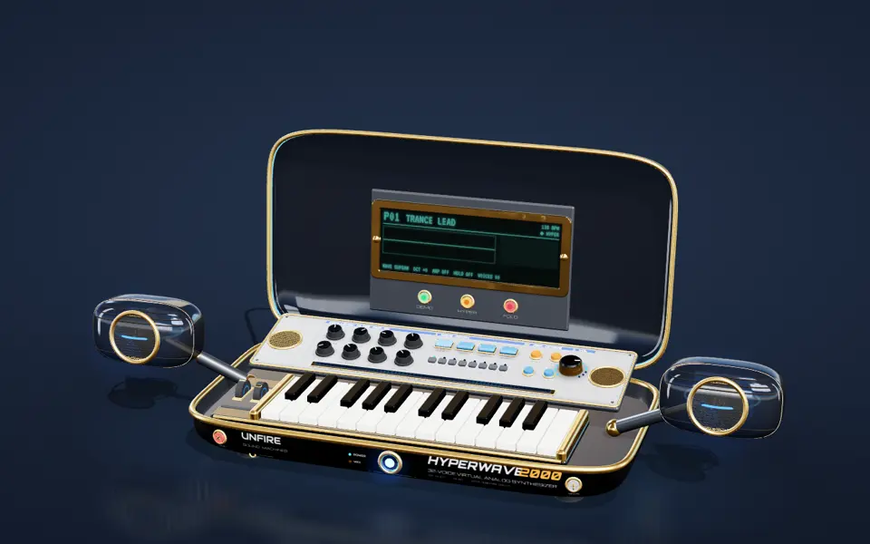
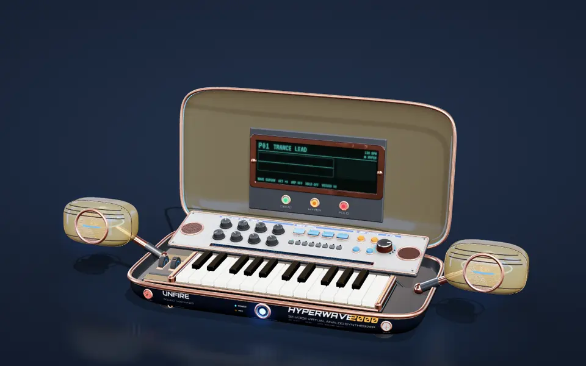

Six movements.






Every frame: digital concept visualisation captured from the real-time Hyperwave 2000 instrument at unfire.technology/audio/hyperwave. No frame depicts physical hardware.
Hyperwave 200003

An instrument that unfolds like a sculpture, and answers like a synthesizer.
Closed, Hyperwave 2000 is a sealed silver form beneath a sapphire canopy. At a touch it opens: the display rises, the keys arrive, the controls lift into the hand and two speakers reach outward. The transformation is the instrument's first gesture — and the reason its future physical form calls for precision robotics, fine craftsmanship and patient engineering.
There is one Hyperwave 2000. It is not a range of models. Each future instrument would be built individually, to order, and personalised with its owner.

Derived from the scale of the existing digital model (1 unit ≈ 10 cm). Design references, not validated physical specifications.



Every frame: digital concept visualisation captured from the real-time Hyperwave 2000 instrument at unfire.technology/audio/hyperwave. No frame depicts physical hardware.
The instrument and its transformation stay the same; its surfaces, metals, light, engraving, setting and any further engineering are defined with its owner. The studies below were made by applying atelier colours to the real-time digital model — they are not samples and not separate editions.




On screen, geometry can stretch freely. In metal and glass, every movement needs a drive, a bearing, a sensor, a load path, a cable route and a safe way to stop. Reproducing the choreography quietly, repeatably and safely around a musician's hands is a robotics programme in its own right.
≈ 8–18 powered axes if keys and controls are cam-synchronised; potentially 30+ if every element moves independently.
Absolute encoders, limit switches, current sensing and pinch detection on every moving assembly.
Precision hinges and linkages sized from real mass and clearance; counterbalanced canopy.
Camshafts, lead screws and gear trains — custom where the sequence demands it.
Flex circuits and cable chains rated for repeated cycles through hinges and telescopic arms.
Embedded audio processor, display, motor controllers and power, verified for latency, heat and EMC.
Real drivers and amplification in moving pods, engineered against resonance and motor noise.
Dedicated motion controller isolated from the audio engine; real timing may be slower than 4.7 s.
Force and current limits, stable power-off positions, manual recovery, qualified conformity assessment.
Canopy and display opening · keyboard tray lift and advance · panel lift and tilt · speaker pod extension and rotation.
Staggered arrival of 25 keys over a playable keybed · nine controls that rise yet stay fully manual · original timing at real masses.
Continuously stretching surfaces and struts of the 3D model · packaging every mechanism inside a ~10 cm closed body.
Desk feasibility by Unfire from the digital source and public component data. Not yet validated by kinematic CAD, an independent mechatronic engineer or a built mechanism.
Hyperwave 2000 is positioned where instrument, kinetic sculpture, precision robotics and collectible design meet — alongside the world of bespoke art-case pianos, individually commissioned audio systems and mechanical art, rather than mass-produced electronic keyboards.
Quotations follow scope. A change of colour belongs within a commission; precious materials, master craftsmanship, artist collaborations or new engineering are scoped and priced on their own merits.
Target starting price for one future physical instrument. Not a binding quotation or current offer; it will be revised upward if validated engineering and manufacturing costs require it.
Extraordinary bespoke commissionsIndicative total budgets for exceptional materials, craftsmanship, collaborations, installations or engineering — each quoted from a written scope.
No deposits, reservations or payments are accepted at this stage.
By email. Setting, intentions and the craft you value.
Open nowWishes translated into a technical brief; engineering confirms what is possible.
Open nowMaterials, finishes and special engineering drawn up and quoted.
After validationWritten specification, schedule, protected payments and refund terms reviewed by counsel.
Not yet availableIndividual assembly, cycle testing, specialist delivery and installation.
Not yet availableA real, playable 3D synthesizer that runs in the browser and transforms on command: unfire.technology/audio/hyperwave
Architecture, actuators, electronics, safety and costs under desk study; specialist engineering firms approached for independent opinions.
No physical prototype, certification, manufacturing partner, delivery date or order book exists yet.
| Gate | Work | Evidence required before moving on |
|---|---|---|
| F0 · Source to mechanism | Timecoded reference of the digital sequence; motion, force, noise and safety requirements. | Frozen requirements; what “faithful” means agreed |
| F1 · Kinematics & packaging | Dimensioned envelopes, mass estimate, torque per joint, interference checks, three mechanism architectures for the one design. | Independent engineer review |
| F2 · Mechanism demonstrators | Canopy hinge with flex harness; speaker pod arm; key/control cam assembly. | Measured cycles, noise, temperature, pinch response |
| F3 · Integrated prototype | Keys, audio, display, drives and power together; safety logic and recovery. | Filmed real prototype with real sound |
| F4 · Manufacturing & launch | Three vendor quotations, compliance classification, legal terms and protected payments. | Owner-approved price and commission terms |
Tell us where Hyperwave might live, what you would want it to express, and the scope you have in mind. Every conversation is handled personally.
hello@unfire.technology
unfire.technology · Play the digital instrument: unfire.technology/audio/hyperwave
All imagery is digital concept visualisation captured from the real-time Hyperwave 2000 digital instrument. No physical unit has been built, certified or offered for sale. Figures are indicative targets, not offers. © 2026 Unfire Technology.